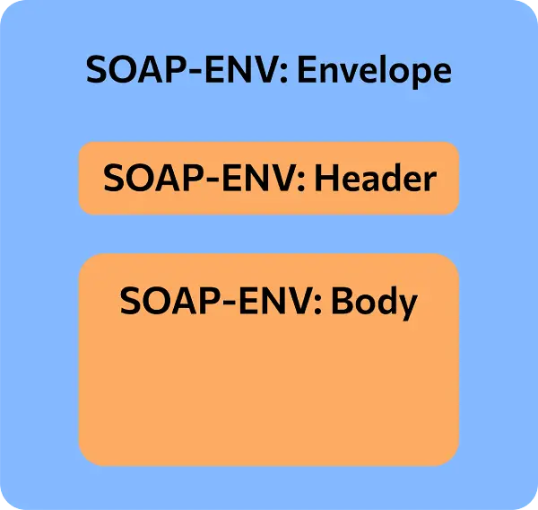

SOAP
Протокол SOAP
Некоторые Web-API (Web Services) используют SOAP протокол, который использует XML-документы для представления сообщений.
SOAP-сообщения состоят из SOAP-конверта, который описывает используемую версию протокола и кодировку, и в котором может быть заголовок (содержит мета-информацию), есть тело и могут быть сообщения об ошибках (Fault).

SOAP-конверт
Пример SOAP-сообщений в Postman.
Оценка SOAP
| Достоинства | Недостатки |
|---|---|
| Строгая структура и однозначность | Сложность |
| Расширяемость (стандартизированные расширения: WS-Security и т.д.) | Не такая хорошая совместимость с браузерами, как у REST (который обычно использует JSON) |
| Популярность | Громоздкость |